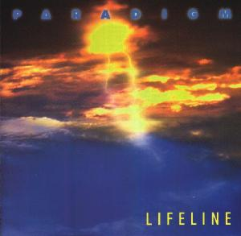
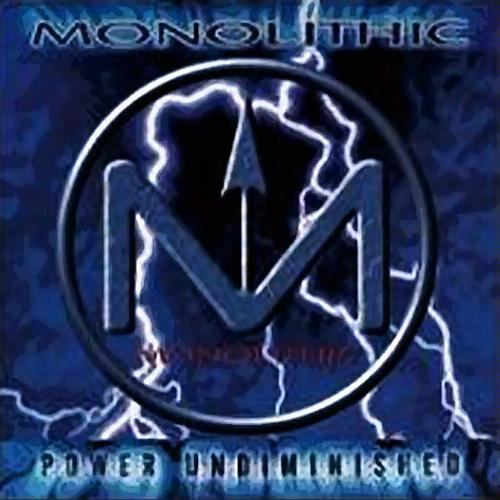
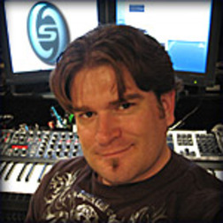

Early History
Midihead, the sole member of Monolithic, is an award winning composer/song writer, remixer, producer, vocalist, and DJ.
From dream to career
From the age of 8, Midihead knew he wanted to have a career in music. That's when he felt he first recognized the power and influence that music had, and envisioned a day where he would create it. At the age of 14 he began his musical endeavors by working as a DJ for a local radio station. By night, he was continued his job as a mobile DJ. Midihead also hosted youth dances with a friend at his school. He took advantage of summer vacation and breaks from school to concentrate on music.
In 1986, at age 18, he had helped to start a popular night club with his friend Diggabeatz and worked as the DJ. The club was extremely successful and eventually became the most popular in the state. However, even though Midihead was successful at his experience as a DJ, spinning other people's music wasn't his dream. Midihead decided that soon he would front a band that would eventually lead him to perform for thousands.

Origins in Paradigm
First Midihead partnered with a friend, Adam, and formed the synthpop group Paradigm. Their music style was similar to Monolithics, with more emphasis on instruments and sounds than vocals. From 1995-1999 Paradigm recorded several albums and singles such as Lifeline, Soul Flight, Textured Sound, and Girders Under A Steel Sky.
Later, Midihead and Adam Split up in late 1999. Even after the discontinuation of his old band, Midihead was still determined to make music.

Formation of Monolithic
Midihead continued producing music on his own, with a similar sound to Paradigm excepting higher variation in sound and extended, emotional vocals. Midihead wrote and recorded both instrumentals and voice. He called his new band Monolithic.
In 2000, Midihead released his first album "Power Undiminished" on Flaming Fish Music. This album won Best Album of 2001 at the American Synthpop awards in Hollywood. This and other early albums maintained a variety of synthpop with vocals, instrumentals, and cooperation with artists like Neuroactive.

Moving Up
Later, Monolithic used A Different Drum to release "House Of Joy" and "Lulling Us To Sleep," maxisingles with remixes to introduce "Dividing Asunder," his second full album. Later singles were combined into a little known album "Otakucon." After this point, most of Monolithic's music was released as non-profit singles.
Music Today
Midihead has made and used tracks for movie previews like The Matrix with Black toast music. He has also recorded several songs for the Dance Dance Revolution videogame series.
Monolithic continues to create music for a growing crowd of fans, but not for formal profit.
Midihead has appeared in Animal Planet, the ILIO Music Demos, Access Hollywood, Jake 2.0, The Matrix Reloaded, Dark Angel, The Ryan Seacrest Show, America's Next Top Model, Prison Break, and Pet Star.
|
You do not have Adobe Flash player. To view this content, please download it here.
Music from Monolithic's first album "Power Undiminished"
|